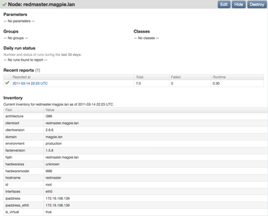
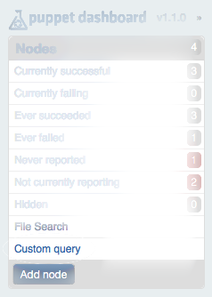
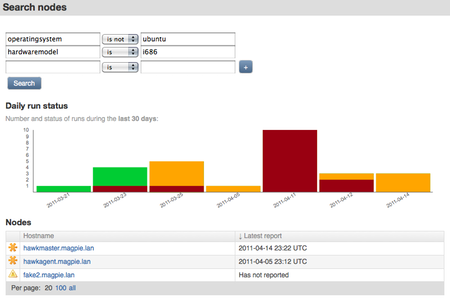

Inventory Service with Puppet Dashboard
Add detailed system information to each node page in Puppet Dashboard, and run custom queries on fact data!
This document is deprecated. For up-to-date information, see the configuring chapter of the latest version of the Puppet Dashboard manual.
What and Why
Starting with version 1.1.0, Puppet Dashboard can enhance its node view pages with detailed system info, and can return lists of nodes filtered by arbitrarily complex search queries.
Now, when you’re investigating an oddity in your reports, you can have everything Puppet knows about the affected system at your fingertips. You can instantly get a list of your Ubuntu boxes that are still running Hardy Heron, find out how many of your nodes are physical and how many are on EC2… and if you’re setting custom facts, then the sky is pretty much the limit!
Using Dashboard With an Inventory
Node Facts
The first part of inventory support needs little explanation: When you view a node page, a table of its most recent facts is shown after its list of recent reports, under the heading of “Inventory:”

It’s essentially equivalent to what you would see if you SSHed into the machine and ran facter, plus whatever custom facts were provided via plugins; it’s just in a more convenient place.
Custom Query
The second part of inventory support is accessible by choosing “Custom query” from the sidebar:

This loads the “Search nodes” page, which has a set of fact / comparison / value fields. To search on a fact, enter the name of the fact in the leftmost field, the comparison type in the middle drop-down, and the value to compare against in the rightmost field. You can use the plus button to add as many additional rows as you need, and the search will be a Boolean AND of all fields.

The search will return a list of matching nodes, and a familiar graph showing their recent run status.
Configuring Dashboard to Use the Inventory
Required Software:
- Puppet Dashboard version ≥ 1.1.0
- puppet master version ≥ 2.6.7, configured with inventory service
jsonorjson_puregem, installed for the Ruby running Puppet Dashboard
This guide assumes that you have already installed and configured Puppet Dashboard, and that you have already configured your puppet master to provide the inventory service. You will have to:
- Permit access on the puppet master
- Configure Dashboard
- Authenticate Dashboard to the CA
- Restart Dashboard
1: Permit Access on puppet master
Following the instructions for configuring access, make sure that the authenticated dashboard host is allowed to find and search on resources beginning with /facts. If no other applications are using the inventory service, you should insert the following into your auth.conf file:
path /facts
auth yes
method find, search
allow dashboard
If you wish to give Dashboard a different certificate common name, you can enter it into the allow directive instead.
2: Configure Dashboard
In its standard configuration, the Dashboard is passive, and gets information pushed to it or requested from it by the puppet master. To use the inventory, you must enable the Dashboard to actively make requests to the master. You will need to make the following changes to config/settings.yml:
Specify Dashboard’s Certificate Common Name
If you specified a non-default certname to the puppet master in step one, you’ll need to make sure Dashboard knows who it’s supposed to be.
cn_name: 'dashboard'
There are also several settings telling Dashboard where to find its SSL information. Unless you wish to use pre-existing keys or store your SSL data somewhere other than the default location, these can be left in their default values, as seen in the config/settings.yml.example file:
ca_crl_path: 'certs/dashboard.ca_crl.pem'
ca_certificate_path: 'certs/dashboard.ca_cert.pem'
certificate_path: 'certs/dashboard.cert.pem'
private_key_path: 'certs/dashboard.private_key.pem'
public_key_path: 'certs/dashboard.public_key.pem'
Specify the Certificate Authority
This must be the same CA used by the rest of your site, and will usually be your puppet master.
ca_server: 'puppet'
ca_port: 8140
Enable the Inventory Service
Inventory support is turned off by default. You’ll need to enable it, and tell Dashboard which server is providing the inventory service, which may be a different puppet master than the one providing the CA service.
enable_inventory_service: true
inventory_server: 'puppet'
inventory_port: 8140
3: Authenticate Dashboard to the CA
Much like puppet agent, Dashboard can submit certificate signing requests to the puppet master. At the time of this writing, this must be done via Rake tasks.
If you already have a keypair for Dashboard to use, you should have configured its location in step two, and can skip the first Rake task; otherwise, in Dashboard’s code directory, run:
$ rake cert:create_key_pair
Then, to request a certificate, run:
$ rake cert:request
This will submit a certificate signing request (CSR) to the puppet master CA. You’ll have to log into the puppet master and run puppet cert sign dashboard, as with any pending CSR. After you’ve signed the certificate, you can retrieve it on the Dashboard by running:
$ rake cert:retrieve
4: Restart Puppet Dashboard
This will enable inventory support, and you should begin seeing fact data on node pages immediately.